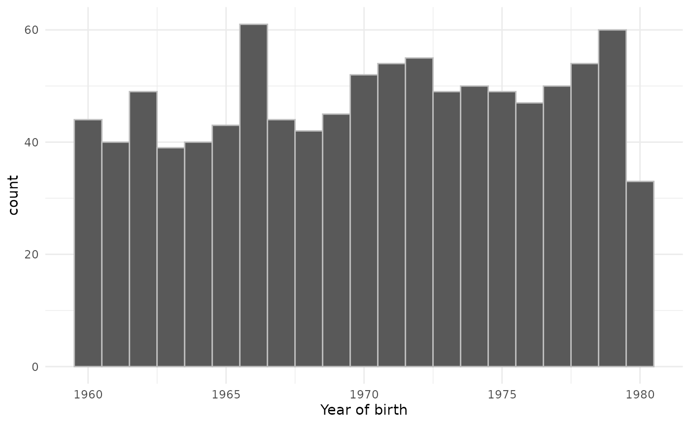

Creating synthetic clinical tables
a01_Creating_synthetic_clinical_tables.RmdThe omock package provides functionality to quickly create a cdm reference containing synthetic data based on population settings specified by the user.
First, let’s load packages required for this vignette.
Now, in three lines of code, we can create a cdm reference with a person and observation period table for 1000 people.
cdm <- emptyCdmReference(cdmName = "synthetic cdm") %>%
mockPerson(nPerson = 1000) %>%
mockObservationPeriod()
cdm
#>
#> ── # OMOP CDM reference (local) of synthetic cdm ───────────────────────────────
#> • omop tables: person, observation_period
#> • cohort tables: -
#> • achilles tables: -
#> • other tables: -
cdm$person %>% glimpse()
#> Rows: 1,000
#> Columns: 7
#> $ person_id <int> 1, 2, 3, 4, 5, 6, 7, 8, 9, 10, 11, 12, 13, 14, 15…
#> $ gender_concept_id <dbl> 8507, 8532, 8532, 8532, 8507, 8507, 8532, 8532, 8…
#> $ year_of_birth <dbl> 1997, 1963, 1986, 1978, 1973, 1961, 1986, 1981, 1…
#> $ month_of_birth <dbl> 8, 1, 3, 11, 3, 2, 12, 9, 7, 6, 1, 10, 1, 3, 7, 1…
#> $ day_of_birth <dbl> 22, 27, 10, 8, 2, 1, 16, 5, 23, 2, 17, 13, 24, 20…
#> $ race_concept_id <lgl> NA, NA, NA, NA, NA, NA, NA, NA, NA, NA, NA, NA, N…
#> $ ethnicity_concept_id <lgl> NA, NA, NA, NA, NA, NA, NA, NA, NA, NA, NA, NA, N…
cdm$observation_period %>% glimpse()
#> Rows: 1,000
#> Columns: 5
#> $ observation_period_id <int> 1, 2, 3, 4, 5, 6, 7, 8, 9, 10, 11, 12, 1…
#> $ person_id <int> 1, 2, 3, 4, 5, 6, 7, 8, 9, 10, 11, 12, 1…
#> $ observation_period_start_date <date> 2000-06-03, 1999-04-05, 2015-01-15, 198…
#> $ observation_period_end_date <date> 2013-06-29, 2003-06-15, 2015-10-11, 201…
#> $ period_type_concept_id <lgl> NA, NA, NA, NA, NA, NA, NA, NA, NA, NA, …We can add further requirements around the population we create. For example we can require that they were born between 1960 and 1980 like so.
cdm <- emptyCdmReference(cdmName = "synthetic cdm") %>%
mockPerson(nPerson = 1000,
birthRange = as.Date(c("1960-01-01", "1980-12-31"))) %>%
mockObservationPeriod()
cdm$person %>%
collect() %>%
ggplot() +
geom_histogram(aes(as.integer(year_of_birth)),
binwidth = 1, colour = "grey") +
theme_minimal() +
xlab("Year of birth")